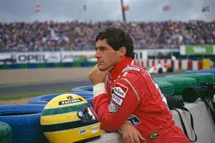
Ayrton Senna
Ayrton Senna foi um dos maiores pilotos de Fórmula 1 da história, conquistando três campeonatos mundiais e deixando um legado duradouro no automobilismo e na cultura brasileira.

Ayrton Senna foi um dos maiores pilotos de Fórmula 1 da história, conquistando três campeonatos mundiais e deixando um legado duradouro no automobilismo e na cultura brasileira.
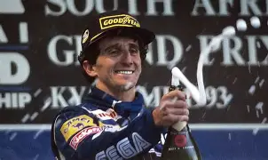
Alain Prost é um ex-piloto de automobilismo francês, amplamente considerado um dos maiores pilotos da história da Fórmula 1. Ele é quatro vezes campeão mundial e é conhecido por sua precisão e habilidade em pista.
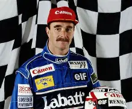
Nigel Mansell é um ex-piloto de automobilismo britânico, conhecido por sua abordagem agressiva e habilidade em pista. Ele conquistou o título mundial da Fórmula 1 em 1992, correndo pela equipe Williams.
.jpg)
Michael Schumacher é um ex-piloto alemão amplamente considerado um dos maiores nomes da história do automobilismo. Ele detém o recorde de 7 títulos mundiais de Fórmula 1. Sua carreira vitoriosa incluiu passagens pelas equipes Jordan, Benetton, Mercedes e, de forma mais marcante, a Ferrari
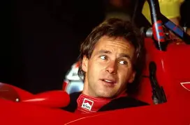
Gerhard Berger é um ex-piloto de automobilismo austríaco, conhecido por sua abordagem agressiva e habilidade em pista. Ele competiu na Fórmula 1 durante os anos 1980 e 1990
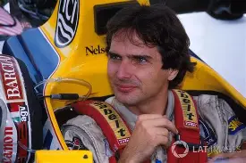
Nelson Piquet é um ex-piloto de automobilismo brasileiro, conhecido por sua abordagem agressiva e habilidade em pista. Ele conquistou três títulos mundiais da Fórmula 1
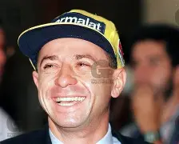
Roberto Moreno é um ex-piloto de automobilismo brasileiro, conhecido por sua abordagem agressiva e habilidade em pista. Ele competiu na Fórmula 1 durante os anos 1980 e 1990
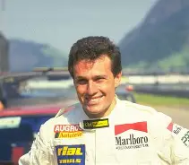
Andrea de Cesaris é um ex-piloto alemão, conhecido por sua abordagem agressiva e habilidade em pista. Ele competiu na Fórmula 1 durante os anos 1980 e 1990
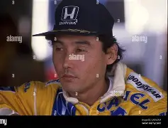
Satoru Nakajima é um ex-piloto japonês, conhecido por sua abordagem agressiva e habilidade em pista. Ele competiu na Fórmula 1 durante os anos 1980 e 1990, correndo pelas equipes Lotus e Tyrrell.
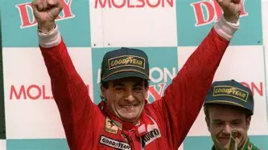
Jean Alesi é um ex-piloto francês, conhecido por sua abordagem agressiva e habilidade em pista. Ele competiu na Fórmula 1 durante os anos 1980 e 1990.
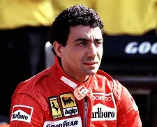
Michele Alboreto é um ex-piloto italiano, conhecido por sua abordagem agressiva e habilidade em pista. Ele competiu na Fórmula 1 durante os anos 1980 e 1990.
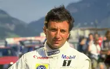
Ricardo Patrese é um ex-piloto de automobilismo argentino, conhecido por sua abordagem agressiva e habilidade em pista. Ele competiu na Fórmula 1 durante os anos 1980 e 1990.